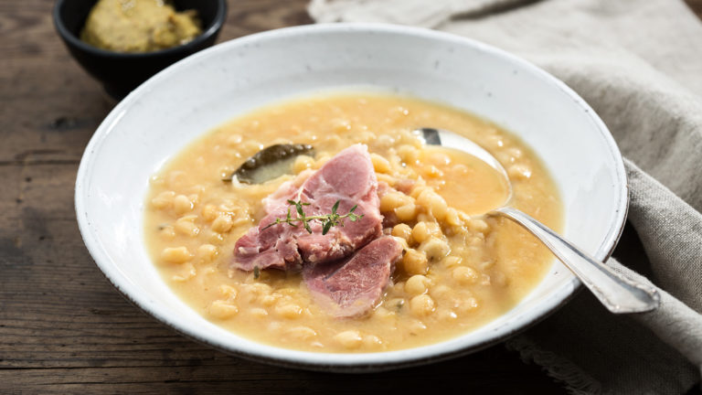

Ärtsoppa - Split Pea Soup

Description
Warm, tasty, and incredibly filling. Swedish yellow split pea soup is a staple food of the Swedish army and a favorite among the people as well. This creamy soup is traditionally eaten on Thursdays with a side of pancakes, and it's easy to see why it's so popular. Try it and see for yourself.
Ingredients
- 8dl split peas
- 2kg salted pork
- 2-3l water
- 2 larged onions
- 1-2 bay leaves
- 2tsp cloves
- 1/2tsp dried marjoram
- 1/2tsp dried thyme
- 1tsp white or black pepper
- Mustard, to taste
Steps
- Soak the peas for at least 6 hours in plenty of water. Before cooking, get rid of the water and rinse the peas.
- Place the meat and peas in a large cooking pot and add the water. Bring it to a boil.
- Remove most of the foam that initially appears when boiling.
- Cut the onions in half and stick the cloves into them.
- Add the onions, bay leaves, and the spices and herbs into the pot.
- When everything's boiling nicely, lower the heat and let it simmer for 40-50 minutes.
- Take the bay leaves, meat, and onions out of the soup. Discard the cloves and bay leaves, then chop the meat and onions into finer pieces and put them back in the soup.
- Taste the soup and see if it needs more salt or pepper.
- Serve the soup with and a a little mustard to taste.
- Enjoy.